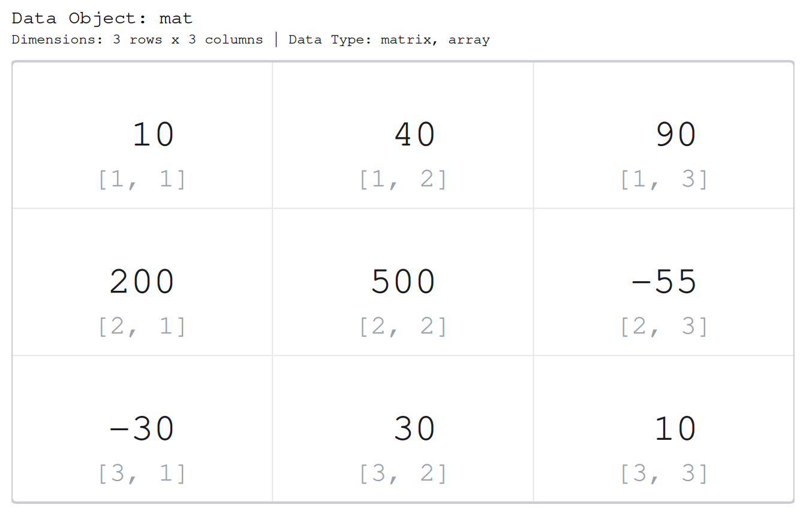
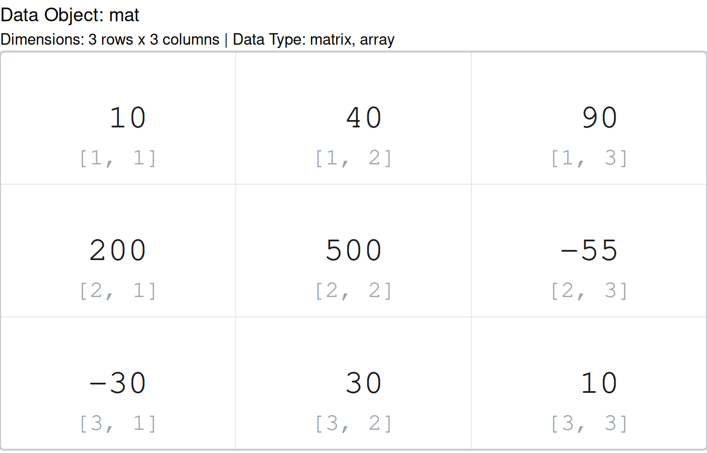
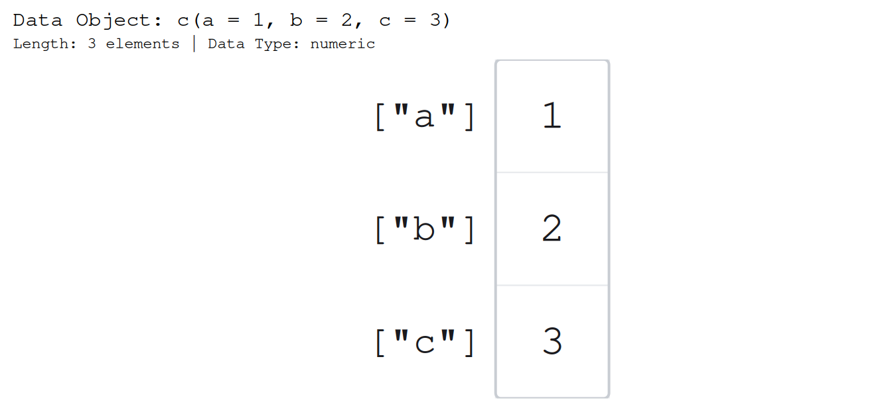
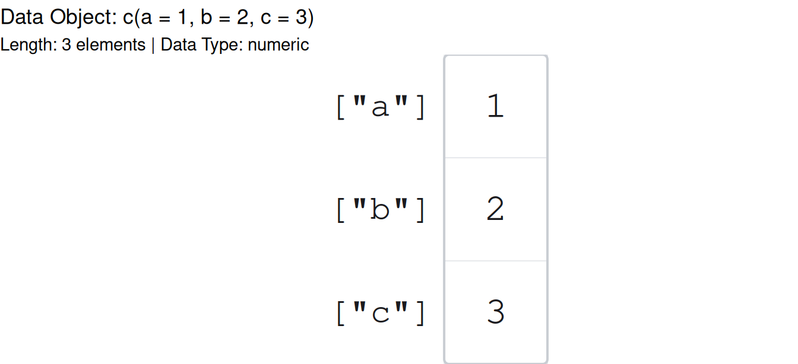
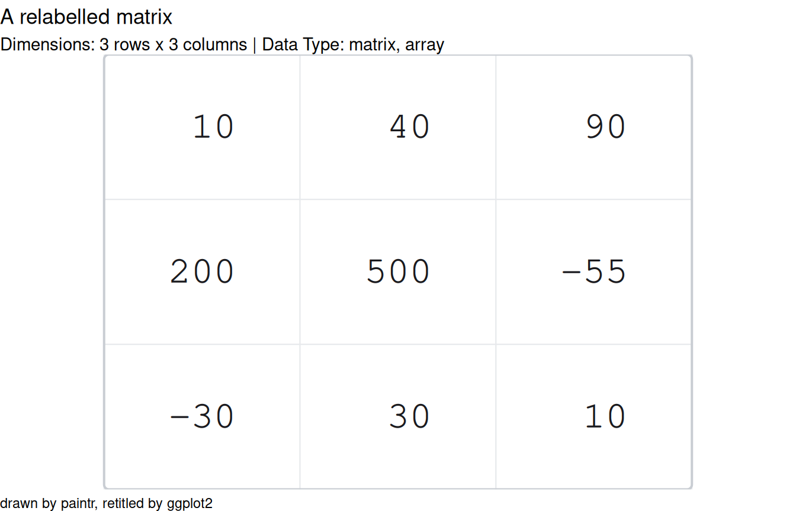

Every structure paintr can draw comes in two flavours. The paint_*() family draws with base graphics; the gpaint_*() family returns a ggplot2 object. This article is about which one to reach for, and about one honest difference between them that is worth understanding before you lean on the ggplot side too hard.
The same picture, twice
The two families draw the same picture. Here is a small matrix in base graphics:
mat <- matrix(c(10, 200, -30, 40, 500, 30, 90, -55, 10), ncol = 3)
paint_matrix(mat, show_indices = "cell")
And here is the identical call in the ggplot2 family:
gpaint_matrix(mat, show_indices = "cell")
Same cells, same accessors under each value, same two-tone digits. The arguments are the same too: everything you learned for paint_matrix() in vignette("paintr", package = "paintr") – show_indices, highlight_area, sigfig, and the rest – carries over to gpaint_matrix() unchanged. Whichever family a structure has a paint_*() for, it has a matching gpaint_*().
So which do you reach for?
The difference is what you get back, and that decides the tool.
paint_*() draws immediately on the current base device and returns its cell table invisibly. That is exactly what you want at a live R console, in a plain .R script, or in a knitr chunk where the picture is the output. There is nothing to print and nothing to keep; you call it and the drawing appears.
paint_vector(c(a = 1, b = 2, c = 3))
gpaint_*() returns a ggplot object. Nothing is drawn until that object is printed, which means you can hold onto it, print it when you like, save it with ggsave(), or arrange several of them in a layout package such as patchwork. Reach for the ggplot family when the drawing is a value you want to move around rather than an action you take.
p <- gpaint_vector(c(a = 1, b = 2, c = 3))
class(p)
#> [1] "ggplot2::ggplot" "ggplot" "ggplot2::gg" "S7_object"
#> [5] "gg"p is an ordinary ggplot object. Printing it draws the picture:
p
To save it to a file you would use ggsave() exactly as with any ggplot:
ggsave("vector.png", p, width = 7, height = 3, dpi = 96)And to sit two paintr pictures side by side, a layout package composes the objects the ordinary way, for example library(patchwork); p1 + p2. That composability is the whole reason to prefer gpaint_*().
The honest caveat: the ggplot is a shell
Here is the part worth being clear-eyed about. A gpaint_*() object is a real ggplot object, but its entire panel is drawn by a custom grid grob, dropped in as a single annotation over a meaningless 0..1 coordinate system. There is no aes() mapping, no geom, and no scale carrying any of the meaning you see.
The practical consequence is that the object does not compose the way a normal ggplot does:
-
ggplot_build()sees an empty layer – there is no data behind the panel to build. -
+ scale_fill_*()has no effect on the cell colours. To fill cells, use thehighlight_areaandhighlight_colorarguments (seevignette("highlighting", package = "paintr")). -
+ geom_point()and friends would draw onto the hidden0..1system, not onto the cells, so they will not land where you expect.
Why build it this way? Not to be clever, and not as a shortcut around ggplot2. Two things paintr does are simply impossible with a geom. First, the cell text is fitted to the device at draw time – ggplot2 builds a layer long before it knows how big the device is, so it cannot measure text and size it to fit the way paintr needs to. Second, every number is drawn as two coloured spans, black for the significant digits and grey for the rest, and geom_text() draws a label in one colour only. A custom grob is the one mechanism that can do either, so that is what the panel is.
What you can still do is everything that operates on the ggplot chrome rather than the panel contents. + labs() retitles it, + theme() restyles the surrounding plot, print() and knitr chunks draw it, and ggsave() writes it out:
gpaint_matrix(mat) +
ggplot2::labs(title = "A relabelled matrix",
caption = "drawn by paintr, retitled by ggplot2")
The title and caption compose because they are ordinary ggplot labels; the cells compose because they were never ggplot layers to begin with.
The short version
Use paint_*() when you want a picture drawn now: at the console, in a script, in a chunk. Use gpaint_*() when you want a ggplot object to print, save, or lay out with other plots – just remember that it is a drawing wearing a ggplot coat, so reach for paintr’s own arguments rather than + scale_*() to change what the cells look like. For the tour of every structure both families can draw, see vignette("paintr", package = "paintr").